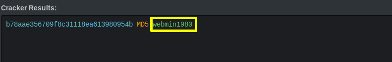

6. Decrypt the Hash
It seems that the above hash is of MD5 type, so just open https://hashkiller.co.uk/md5-decrypter.aspx and decrypt the above hash value.

we got the real value behind the hash which is “webmin1980“. Now you can actually explore the application with Admin Role Privileges. Index
Index